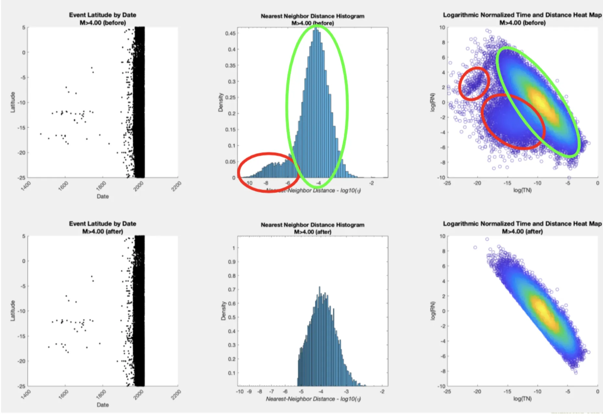

Extreme Events Engineering VIP Project
I am going into my third and final semester of being involved in the Extreme Events Engineering Vertically Integrated Project (VIP) under Dr. Jorge Macedo.
During my first semester, I was tasked with updating/fixing a legacy Python codebase that had gone untouched for 5 years that performed seismic catalog declustering calculations on a dataset of earthquakes using the Zaliapin and Ben-Zion method. With help from teammates (who were working on implementations of other declustering algorithms), I ended up adding some data visualizations shown below.
Declustering, or classifying independent and dependent events and removing the dependent events from the catalog, may be useful for isolating independent events during seismic hazard assessment, development of clustered seismicity models, earthquake prediction research, or seismicity rate change estimation.
|
|

|
During my second semester, I created a MATLAB implementation of the Zaliapin and Ben-Zion method with more complex visualizations and also started creating a MATLAB k-means declustering implementation. The clusters currently outputted by the k-means implementation do not correspond to those that should be detected. This may imply that the k-means method cannot detect the correct clusters, thus it is important that we evaluate other classification methods (i.e., Gaussian mixture models) in the future.
